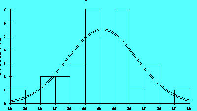
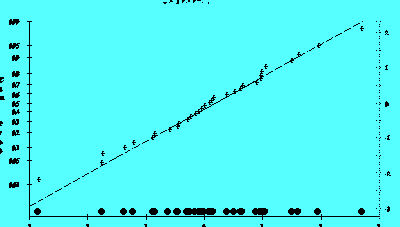
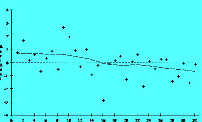
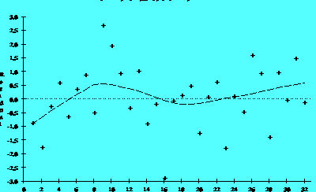
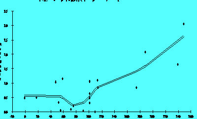
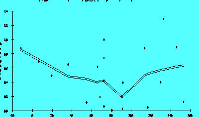
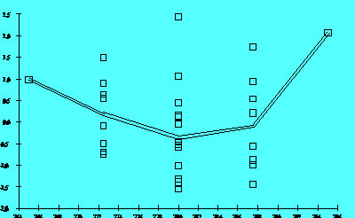
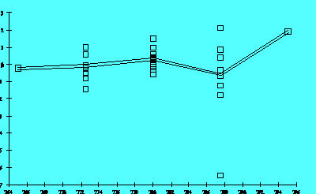
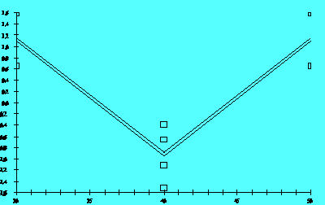

|
5.
Process Improvement
5.2. Introduction 5.2.4. What are the elements of a simple experiment?
|
|||
| Residuals are elements of variation
unexplained by the regression model generated. Since this is a form of
error, the same general principles apply to the group of residuals as would
apply to errors in general: one expects them to be normally and independently
distributed with a mean of 0 and some constant variance.
These are the assumptions behind ANOVA and classical regression analysis. In English, this means that an analyst should expect a regression model to err in predicting a response in a random fashion; it should predict values higher than actual and lower than actual with equal probability. In addition, the level of the error should be independent of when the observation occurred in the study, or the size of the observation being predicted, or even the factor settings involved in making the prediction. We emphasize the use of graphical methods to examine residuals. Departures from these assumptions usually mean that the residuals contain structure. Identifying that structure and adding a term representing it to the original model leads to a better model. Tests for Residual Normality Any graph suitable for displaying the distribution of a set of data is suitable for judging the normality of the distribution of a.group of residuals. The three most common types are:: histograms, normal probability plots, and dot plots.  Figure 2.5A The histogram is a frequency plot obtained by determining the population of entries in regularly spaced cells and plotting that frequency versus the center of the cell. Figure 2.5A illustrates a normal distribution of 'residuals produced by a model for a semiconductor process. The software superimposes a normal density function on a histogram if requested. Sample sizes of residuals are generally small (<50) because experiments have limited treatment combinations, so the histogram may not be the best choice for judging the distribution of residuals. A more sensitive graph is the normal probability plot. To create this graph manually, sort the residuals into ascending order and calculate the cumulative probability of each residual using the formula: P (i-th residual) = i/n where P is the cumulative probability of a point, i is the order of the value in the list and n is the number of entries in the list. Plotting the calculated P values versus the residual value on normal probability paper produces an approximately straight line if the points come from a normal distribution. Figure 2.5B illustrates the normal probability graph created from the same group of residuals used for Figure 2.5A This graph reflects the addition of the dot plot.  Figure 2.5B A normal probability plot is also useful for judging which effects among a group of calculated effects are statistically different from 0. In addition it helps explain the unusual dispersion of the markings on the left y-axis. The values on the left y-axis correspond to the area under a normal distribution curve that lies below a particular 'z' value shown on the right y-axis. Small departures from the straight line in the normal probability plot are common, but a clearly "S" shaped curve on this graph suggests a bimodal distribution of residuals. Breaks near the middle of this graph are also indications of abnormalities in the residual distribution. NOTE: Studentized residuals are residuals converted to a scale approximately representing the standard deviation of an individual residual from the center of the residual distribution. The technique used to convert residuals to this form produces a Student's t distribution of values. Independence of Residuals Over Time If the order of the observations in a data table represents the order of execution of each treatment combination, then a plot of the residuals of those observations versus the case order or time order of the observations will test for any time dependency.  Figure 2.6A  Figure 2.6B The residuals in Figure 2.6A suggest a time trend, while those in Figure 2.6B do not. Figure 2.6A suggests that the system was drifting slowly to lower values as the investigation continued. In extreme cases a drift of the equipment will produce models with very poor ability to account for the variability in the data (low R-Square). If the investigation includes centerpoints, then plotting them in -time order may produce a more clear indication of a time trend if one exists. Plotting the raw responses in time sequence can also help detect step changes in a process that residual plots might not detect. Independence of Residuals from Size of Predicted Value Plotting residuals versus the value of a fitted response should produce a distribution of points scattered randomly about 0, regardless of the size of the fitted value. Quite commonly, however, residual values may increase as the size of the fitted value increases. When this happens, the residual cloud becomes "funnel-shaped" with the larger end toward larger fitted values; that is, the residuals have larger and larger scatter as the value of the response increases. Plotting the absolute values of the residuals instead of the signed values will produce a "wedge-shaped" distribution; a smoothing function is added to each graph which helps to show the trend.  Fgure 2.7A  Figure 2.7B A residual distribution such as that in Figure 2.7A showing a trend
to higher absolute residuals as the value of the response increases suggests
that one should transform the response, perhaps by fib modeling its logarithm
or square root, etc., (contractive transformations). Transforming a response
in this fashion often simplifies its relationship with a predictor variable
and leads to simpler models. Later sections discuss transformation in more
detail. Figure 2.7B is the same response after a transformation to reduce
the scatter. Notice the difference in sales on the vertical axes.
Independence of Residuals from Factor Settings  Figure 2.8A  Figure 2.8B Figure 2.8A shows that the size of the residuals changed as a function of a predictor's settings. A graph like this suggests that the model needs a higher-order term in that predictor or that one should transform the predictor using a logarithm or square root, for example. In this case, Figure 2.8B shows the residuals for the same response after adding a quadratic term. Notice the single point widely separated from the other residuals in Figure 2.8B. This point is an "outlier." That is, its setting is well within the range of values used for this predictor in the investigation, but its result was somewhat lower than the model predicted. A signal that curvature is present is a trace resembling a "frown" or a "smile" in these graphs.  Figure 2.8C The example given in Figures 2.8A and 2.8B obviously involves five levels of the predictor. The experiment is a form of response surface design. For the simple factorial design that includes centerpoints, if the response model being considered lacked one or more higher order terms, the plot of residuals versus factor settings might appear as in Figure 2.8C While the graph gives a definite signal that curvature is present, identifying
the source of that curvature is not possible due to the structure of the
design matrix. Graphs generated using the other predictors in that situation
would have very similar appearances.
|
|||